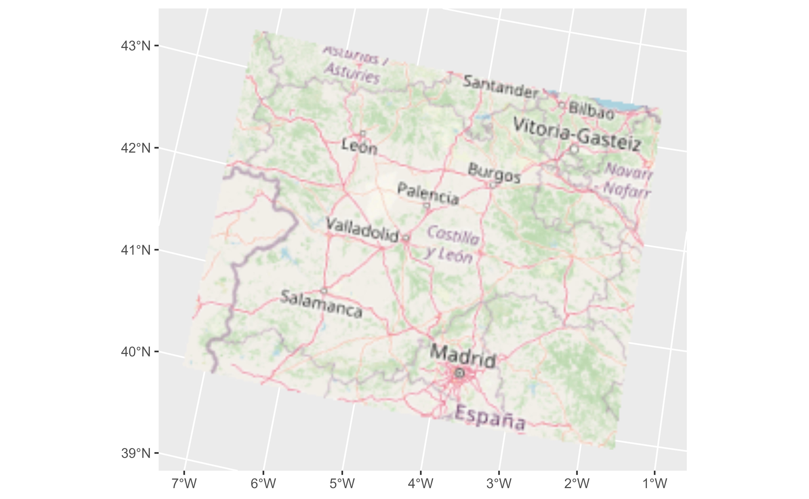

This geom is used to visualise SpatRaster objects (see terra::rast()) as
RGB images. The layers are combined such that they represent the red,
green and blue channel.
For plotting SpatRaster objects by layer values use geom_spatraster().
The underlying implementation is based on ggplot2::geom_raster().
Usage
geom_spatraster_rgb(
mapping = aes(),
data,
interpolate = TRUE,
r = 1,
g = 2,
b = 3,
alpha = 1,
maxcell = 5e+05,
max_col_value = 255,
...,
stretch = NULL,
zlim = NULL,
mask_projection = FALSE
)Source
Based on the layer_spatial() implementation on ggspatial package.
Thanks to Dewey Dunnington and ggspatial contributors.
Arguments
- mapping
Ignored.
- data
A
SpatRasterobject.- interpolate
If
TRUEinterpolate linearly, ifFALSE(the default) don't interpolate.- r, g, b
Integer representing the number of layer of
datato be considered as the red (r), green (g) and blue (b) channel.- alpha
The alpha transparency, a number in [0,1], see argument alpha in
hsv.- maxcell
positive integer. Maximum number of cells to use for the plot.
- max_col_value
Number giving the maximum of the color values range. When this is
255(the default), the result is computed most efficiently. SeegrDevices::rgb().- ...
Other arguments passed on to
layer()'sparamsargument. These arguments broadly fall into one of 4 categories below. Notably, further arguments to thepositionargument, or aesthetics that are required can not be passed through.... Unknown arguments that are not part of the 4 categories below are ignored.Static aesthetics that are not mapped to a scale, but are at a fixed value and apply to the layer as a whole. For example,
colour = "red"orlinewidth = 3. The geom's documentation has an Aesthetics section that lists the available options. The 'required' aesthetics cannot be passed on to theparams. Please note that while passing unmapped aesthetics as vectors is technically possible, the order and required length is not guaranteed to be parallel to the input data.When constructing a layer using a
stat_*()function, the...argument can be used to pass on parameters to thegeompart of the layer. An example of this isstat_density(geom = "area", outline.type = "both"). The geom's documentation lists which parameters it can accept.Inversely, when constructing a layer using a
geom_*()function, the...argument can be used to pass on parameters to thestatpart of the layer. An example of this isgeom_area(stat = "density", adjust = 0.5). The stat's documentation lists which parameters it can accept.The
key_glyphargument oflayer()may also be passed on through.... This can be one of the functions described as key glyphs, to change the display of the layer in the legend.
- stretch
character. Option to stretch the values to increase contrast: "lin" (linear) or "hist" (histogram). The linear stretch uses
stretchwith argumentsminq=0.02andmaxq=0.98- zlim
numeric vector of length 2. Range of values to plot (optional). If this is set, and
stretch="lin"is used, then the values are stretched within the range ofzlim. This allows creating consistent coloring between SpatRasters with different cell-value ranges, even when stretching the colors for improved contrast- mask_projection
logical, defaults to
FALSE. IfTRUE, mask out areas outside the input extent. For example, to avoid data wrapping around the date-line in Equal Area projections. This parameter is passed toterra::project()when reprojecting theSpatRaster.
Value
A ggplot2 layer
terra equivalent
Coords
When the SpatRaster does not present a crs (i.e.,
terra::crs(rast) == "") the geom does not make any assumption on the
scales.
On SpatRaster that have a crs, the geom uses ggplot2::coord_sf() to
adjust the scales. That means that also the
SpatRaster may be reprojected.
See also
ggplot2::geom_raster(), ggplot2::coord_sf(), grDevices::rgb().
You can get also RGB tiles from the maptiles package,
see maptiles::get_tiles().
Other ggplot2 utils:
autoplot.Spat,
fortify.Spat,
geom_spat_contour,
geom_spatraster(),
ggspatvector,
stat_spat_coordinates()
Examples
# \donttest{
# Tile of Castille and Leon (Spain) from OpenStreetMap
file_path <- system.file("extdata/cyl_tile.tif", package = "tidyterra")
library(terra)
tile <- rast(file_path)
library(ggplot2)
ggplot() +
geom_spatraster_rgb(data = tile) +
# You can use coord_sf
coord_sf(crs = 3035)

# Combine with sf objects
vect_path <- system.file("extdata/cyl.gpkg", package = "tidyterra")
cyl_sf <- sf::st_read(vect_path)
#> Reading layer `cyl' from data source
#> `D:\a\_temp\Library\tidyterra\extdata\cyl.gpkg' using driver `GPKG'
#> Simple feature collection with 9 features and 3 fields
#> Geometry type: MULTIPOLYGON
#> Dimension: XY
#> Bounding box: xmin: 2892687 ymin: 2017622 xmax: 3341372 ymax: 2361600
#> Projected CRS: ETRS89-extended / LAEA Europe
ggplot(cyl_sf) +
geom_spatraster_rgb(data = tile) +
geom_sf(aes(fill = iso2)) +
coord_sf(crs = 3857) +
scale_fill_viridis_d(alpha = 0.7)
 # }
# }